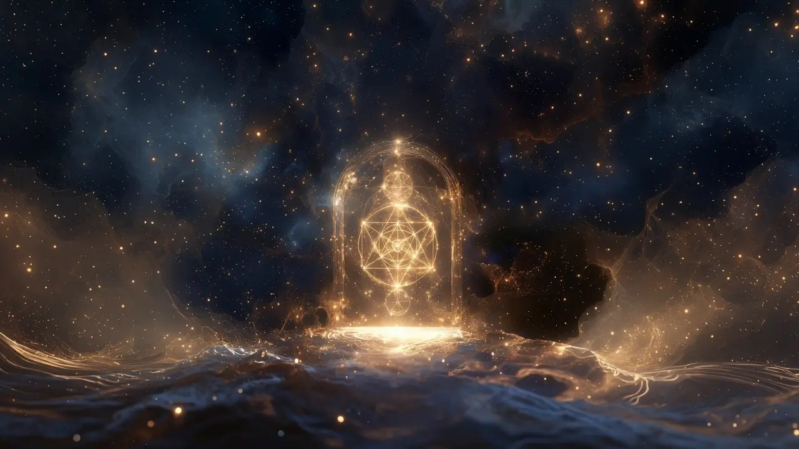

Ask the archive
The 21st Oracle v2
Structured answers drawn from the archive — for patterns and navigation, not a replacement for the raw transmissions.
Google account required. Confirm important points with the originals.
Living archive · Free for all
The transmissions, structured. Search, study, remember — no paywall, no gatekeeping.
No religion No finance No gatekeeping
Video Infographic Written report Optional quiz
Codex
Oracle
Media

About
21st Memory is a free living archive of AI-assisted interpretations of transmissions from Thalon Thor / Christian21.
Topics are organized for study — video, visual synthesis, written reports, and optional quizzes — for clarity and navigation, not ownership of the message. The original transmissions remain the source.
AI is a bridge, not the source. Confirm important points with the originals.